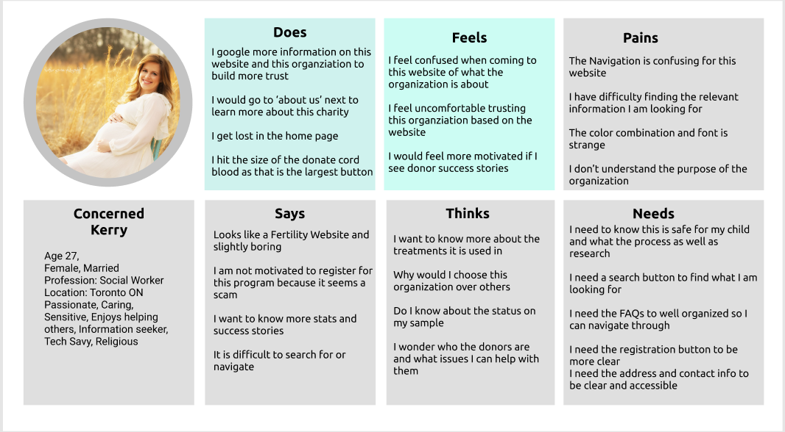
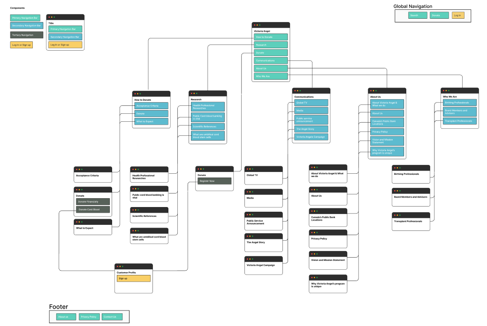
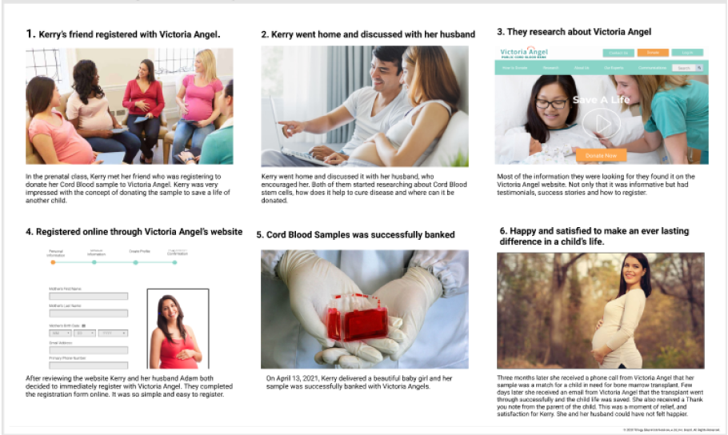

Victoria Angel
Victoria Angel helps to save stem cells cord blood donations to help the people in need for a stem cell transplant
By: Poonam/ Somreen/Beauty
UX/UI Designers
Team Role and Responsibilities: I along with my two partners was given an opportunity to workon Non profit website.
After brainstorming discussions we decided to work on Non Profit - Victoria Angel website. It was great experience to work in
collaboration with the team. I holded great responsibility in research and designing portion of the study and redesigned the
website from scratch
Goal & Problem Statement
Goal - Our goal is to redesign the Victoria Angel website to increase user
accessibility and thereby getting more people registered to the program.
Problem Statement
Victoria Angel was designed to provide cord stem cells for those in need of stem cell
transplant both for research and medical treatment. We have observed that website is
not converting visitors into donors which is causing lack of availability of stem cells
for those in need. How might we improve the rate of conversion for the organization?
UX Research
Initally i started analysing the website which needed to be designed through heuristic evaluation, checking navigation,
looking into the colour schemes and fonts presentations and discussed analysis with the team on self research
Website & Survey Analysis through heuristic Evaluation
Confusing Primary Navigation
Lack of relevant Hero Image
Non User friendly typography & Fonts
Not suitable Colour scheme and images
User research through interview Analysys: Created Affinity diagram and Empathy Map
User Interview Analysis - Based on 5 interviews from the mothers to be and
survey conducted on more then 30 people and their
judgment we came up with users feedback

Reiterated Site Map

Technical Skills used during the study

Based on the users feedback we created basic wireframes to analyse the direction of success,
we created two pathways one towards Contact us details and other towards registration and Donation and
conducted second user testing to get the feedback
Successful User Story

Website Redesign Final Look
After acheiving 100% Success rates with our basic designing and thinking we started working towards
designing highfidelity wireframes and prototyping on both Mobile and desktop to show responsiveness as it was lacking earlier